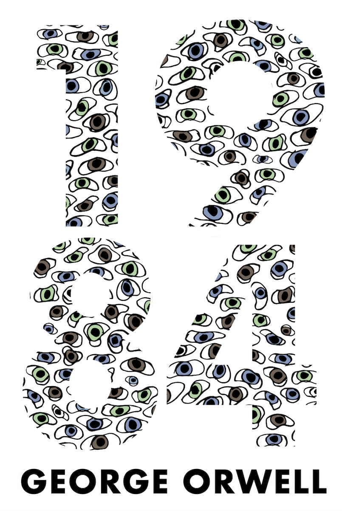
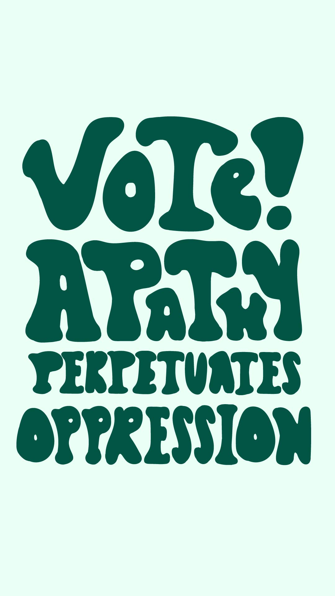
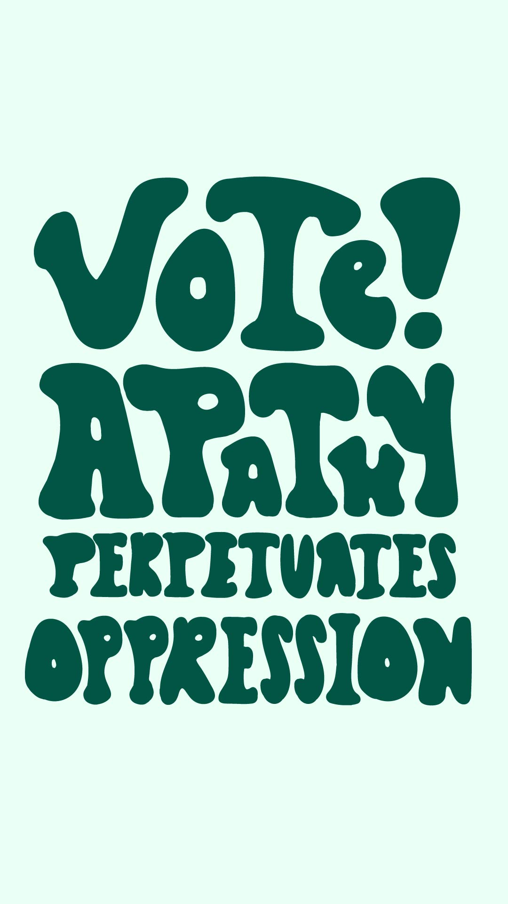
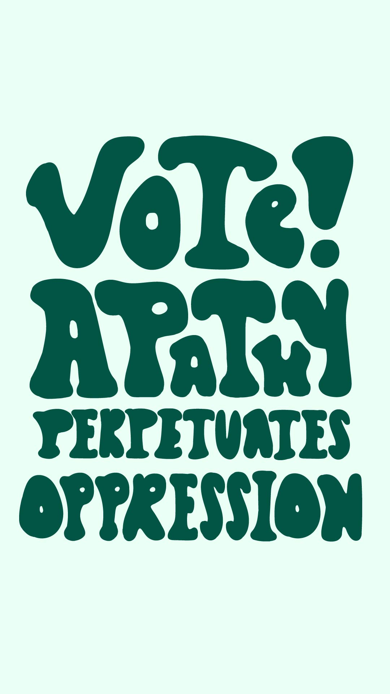
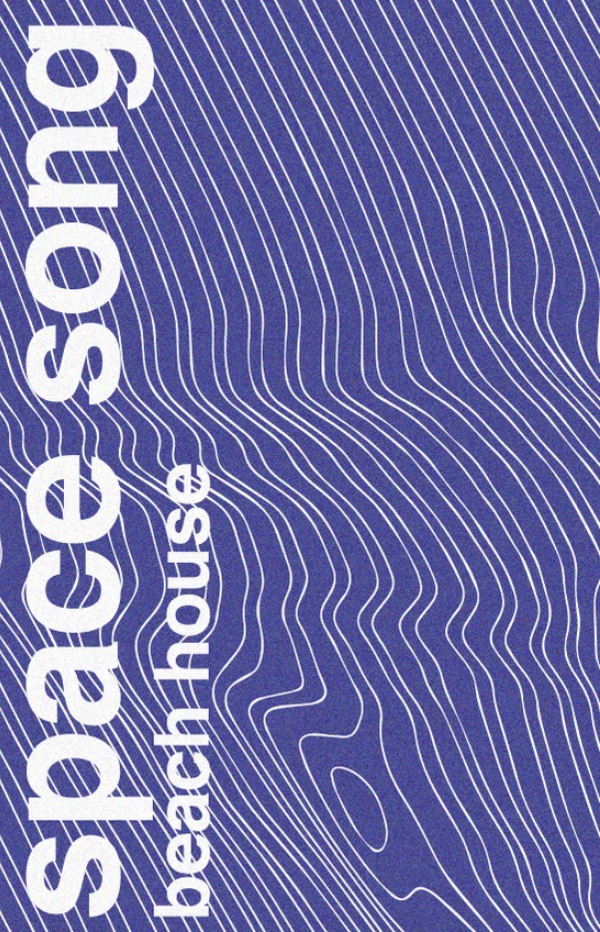

 




these are some samples of my graphic design work. a lot of it is created with the use of adobe suite. the first two pieces are sample covers i created for my favorite novel, george orwell's 1984. i attempted to capture a feeling of jarring and creepy surveillance. the purple pieces are the beginning of a song lyric zine i created to beach house's space song. i attempted to emulate old low-budget printing techniques using adobe photoshop.